VOCÊ
CONHECE A
VÁRZEA
BRASILEIRA?


O futebol de várzea é um berço do talento brasileiro e um espelho da vida cotidiana de milhares de pessoas. Muito mais do que esporte, ele é cultura, identidade e resistência popular. Valorizar a várzea é reconhecer a raiz mais genuína do futebol no Brasil.
A várzea vai muito além do futebol. Hoje em dia todo jogo é um evento nas comumidades, onde jovens e adultos de todas as idades se jutam para prestigiar o jogo. Onde as torcidas tem o time como se fosse uma parte dele, torcendo de corpo e alma, uma sensação que so quem vive pode entender.
Hoje em dia á várzea tem um grande impaccto no futebol profissional, onde alguns jogadores vão para times profi ssionais. Eventos como a taça das favelas, torneio criado para dar uma chance aos jovens periferio=cos de mostrar seu talento
COMO É
SER UM
JOGADOR DE VÁRZEA
Um jogador de várzea pode ter uma vida semelhante a de um jogador profissional, mas como é, viver a várzea?
 



 



O Menino da Várzea que Conquistou os Estádios
Muitos craques começaram na várzea e brilharam no futebol mundial. A várzea é berço de talentos inesquecíveis.
Times da Várzea


Calculadora de Valores
Quanto recebe um jogador de várzea?
Campeonatos da Várzea
Eventos que reúnem bairros inteiros, famílias e paixões. Os campeonatos da várzea são mais do que partidas: são tradições que atravessam gerações.